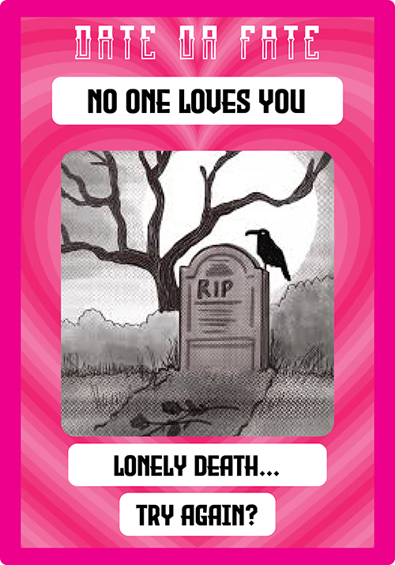

Looks like Cupid’s packed his bags and left you high and dry! No sweetheart, no family dinner, not even a single soul to check in and see if you made it home safe. Just you, your thoughts, and the deafening silence of an empty room...Days turn to weeks, weeks turn to years, and still… Not a peep! No calls, no kisses, no “just checking in.” Seems the only thing that stuck around was your loneliness. Even the ghosts have someone to haunt! Date or Fate, not every heart gets a happy ending. Some folks leave with a broken heart… and some simply stop beating.
First Chance